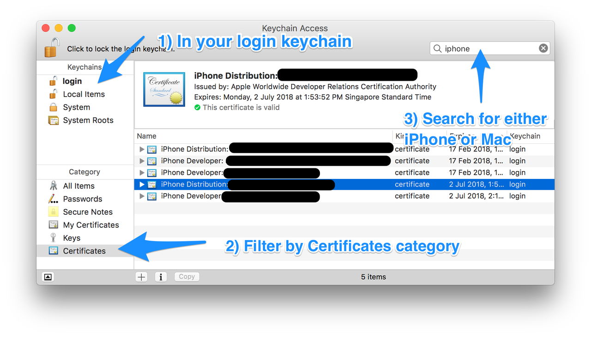
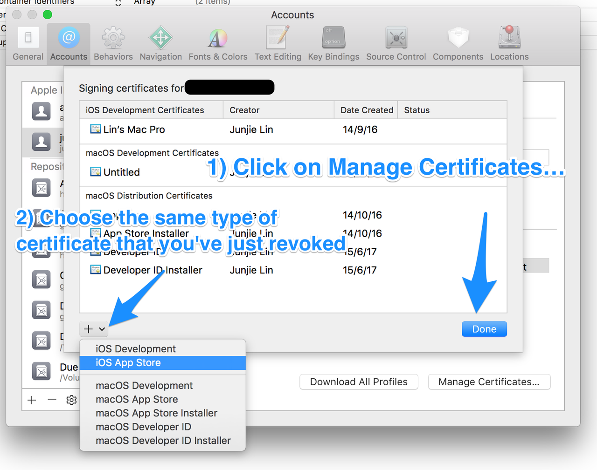
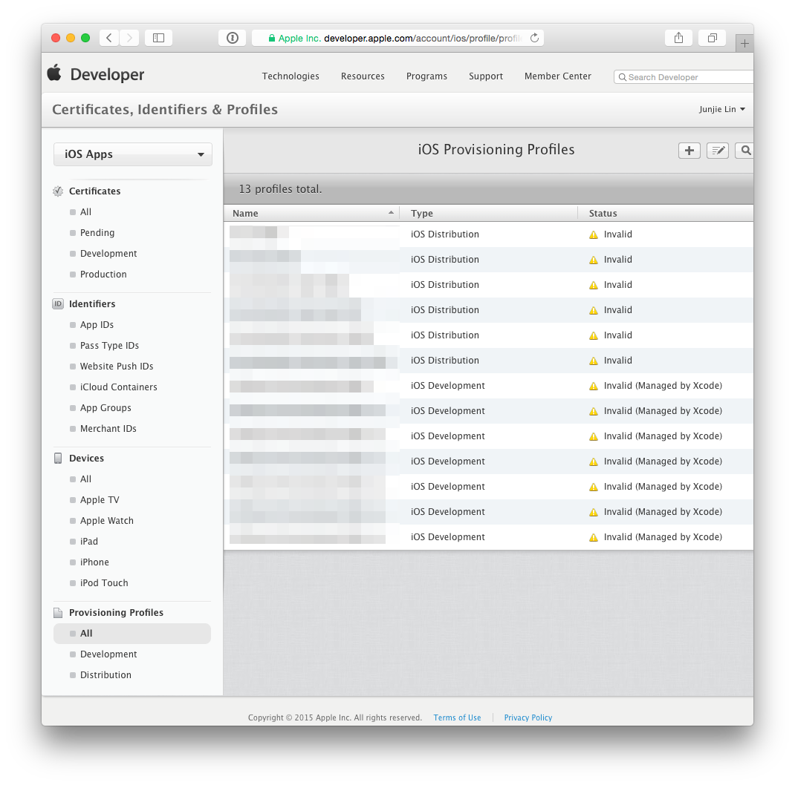
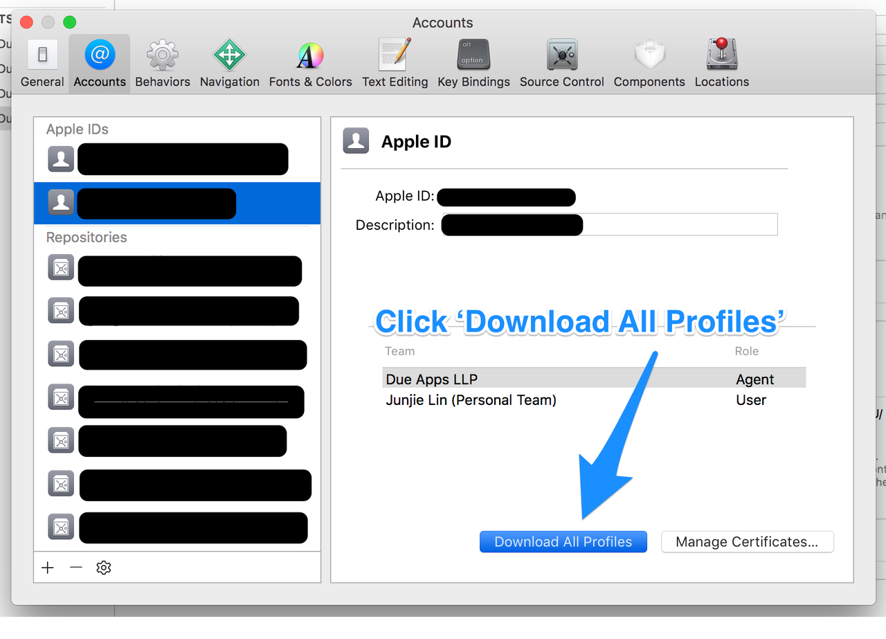

Proper way to renew distribution certificate for iOS
My distribution certificate is expiring on June 7th, along with all of my provisioning files. How do I properly renew it? Should I revoke it now and request a new one? If I do that than will all my live apps be taken down?
Answer
Your live apps will not be taken down. Nothing will happen to anything that is live in the app store.
Once they formally expire, the only thing that will be impacted is your ability to sign code (and thus make new builds and provide updates).
Regarding your distribution certificate, once it expires, it simply disappears from the ‘Certificates, Identifier & Profiles’ section of Member Center. If you want to renew it before it expires, revoke the current certificate and you will get a button to request a new one.
Regarding the provisioning profile, don't worry about it before expiration, just keep using it. It's easy enough to just renew it once it expires.
The peace of mind is that nothing will happen to your live app in the store.
Suggest
When your certificate expires, it simply disappears from the ‘Certificates, Identifier & Profiles’ section of Member Center. There is no ‘Renew’ button that allows you to renew your certificate. You can revoke a certificate and generate a new one before it expires. Or you can wait for it to expire and disappear, then generate a new certificate. In Apple's App Distribution Guide:
Replacing Expired Certificates
When your development or distribution certificate expires, remove it and request a new certificate in Xcode.
When your certificate expires or is revoked, any provisioning profile that made use of the expired/revoked certificate will be reflected as ‘Invalid’. You cannot build and sign any app using these invalid provisioning profiles. As you can imagine, I'd rather revoke and regenerate a certificate before it expires.
Q: If I do that then will all my live apps be taken down?
Apps that are already on the App Store continue to function fine. Again, in Apple's App Distribution Guide:
Important: Re-creating your development or distribution certificates doesn’t affect apps that you’ve submitted to the store nor does it affect your ability to update them.
So…
Q: How to I properly renew it?
As mentioned above, there is no renewing of certificates. Follow the steps below to revoke and regenerate a new certificate, along with the affected provisioning profiles. The instructions have been updated for Xcode 8.3 and Xcode 9.
Step 1: Revoke the expiring certificate
Login to Member Center > Certificates, Identifiers & Profiles, select the expiring certificate. Take note of the expiry date of the certificate, and click the ‘Revoke’ button.

Step 2: (Optional) Remove the revoked certificate from your Keychain
Optionally, if you don't want to have the revoked certificate lying around in your system, you can delete them from your system. Unfortunately, the ‘Delete Certificate’ function in Xcode > Preferences > Accounts > [Apple ID] > Manage Certificates… seems to be always disabled, so we have to delete them manually using Keychain Access.app (/Applications/Utilities/Keychain Access.app).

Filter by ‘login’ Keychains and ‘Certificates’ Category. Locate the certificate that you've just revoked in Step 1.
Depending on the certificate that you've just revoked, search for either ‘Mac’ or ‘iPhone’. Mac App Store distribution certificates begin with “3rd Party Mac Developer”, and iOS App Store distribution certificates begin with “iPhone Distribution”.
You can locate the revoked certificate based on the team name, the type of certificate (Mac or iOS) and the expiry date of the certificate you've noted down in Step 1.
Step 3: Request a new certificate using Xcode
Under Xcode > Preferences > Accounts > [Apple ID] > Manage Certificates…, click on the ‘+’ button on the lower left, and select the same type of certificate that you've just revoked to let Xcode request a new one for you.

Step 4: Update your provisioning profiles to use the new certificate
After which, head back to Member Center > Certificates, Identifiers & Profiles
Provisioning Profiles > All. You'll notice that any provisioning profile that made use of the revoked certificate is now reflected as ‘Invalid’.

Click on any profile that are now ‘Invalid’, click ‘Edit’, then choose the newly created certificate, then click on ‘Generate’. Repeat this until all provisioning profiles are regenerated with the new certificate.

Step 5: Use Xcode to download the new provisioning profiles
Tip : Before you download the new profiles using Xcode, you may want to
clear any existing and possibly invalid provisioning profiles from your Mac.
You can do so by removing all the profiles from
~/Library/MobileDevice/Provisioning Profiles
Back in Xcode > Preferences > Accounts > [Apple ID], click on the ‘Download All Profiles’ button to ask Xcode to download all the provisioning profiles from your developer account.
